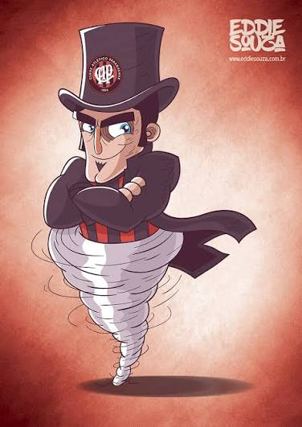

Club Athletico Paranaense

História e Glórias

Fundação: 26 de março de 1924
Nascido da fusão de dois clubes de Curitiba, o Club Athletico Paranaense construiu uma das histórias mais modernas e revolucionárias do futebol brasileiro. Conhecido como "Furacão" pela forma avassaladora como conquistou o Campeonato Paranaense de 1949, o clube orgulha-se de sua gestão inovadora e de sua casa, a Ligga Arena (Arena da Baixada), o primeiro estádio da América Latina com teto retrátil.
O Athletico rompeu as fronteiras estaduais e se consolidou como um gigante nacional em 2001, ao vencer o Campeonato Brasileiro. A partir da década de 2010, o clube tornou-se uma potência copeira indiscutível no continente, erguendo a Copa do Brasil e conquistando duas vezes a Copa Sul-Americana, firmando seu status entre a elite do futebol continental.
Principais Títulos 🏆
- Copa Sul-Americana: 2 (2018, 2021)
- Campeonato Brasileiro: 1 (2001)
- Copa do Brasil: 1 (2019)
- Levain Cup/Conmebol: 1 (2019)
Hino do Clube
Conhecemos teu valor
E a camisa rubro-negra
Só se veste por amor!
Vamos marchar sempre cantando
O hino do Furacão
E no peito ostentando
A faixa de campeão!
O coração athleticano
Estará sempre voltado
Para os feitos do presente
E as glórias do passado!
Athletico! Athletico!
Conhecemos teu valor
E a camisa rubro-negra
Só se veste por amor!